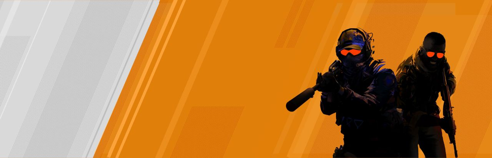
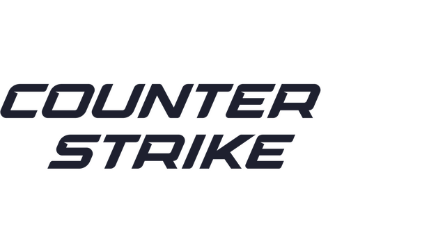

Oyunlarını keşfet
Şampiyonlar, rünler ve eşya dizilimleri; haritalar, infolar ve smoke videoları. Hepsi tek yerde, Türkçe.
Oyunlar
League of Legends
Tüm şampiyonların pasifleri, Q/W/E/R yetenekleri ve eşyalar.


Haritalar · İnfolar · Smoke videolarıCounter-Strike 2
9 rekabetçi harita: radar üzerinde infolar; A, B ve Orta için smoke, flash, molotof ve el bombası videoları.
Ajanlar · Haritalar · İnfolar


Valorant
Tüm ajanların yetenekleri ve rekabetçi haritalar: radar üzerinde infolar.
Katiller · Survivor'lar · Perkler · Haritalar


Dead by Daylight
Katillerin güçleri, perkler ve oyun içi videoları; haritalarda jeneratör noktaları.
 Kahramanlar · Trinket'lar · Bosslar · Eşyalar
Kahramanlar · Trinket'lar · Bosslar · Eşyalar
Darkest Dungeon
Darkest Dungeon ve Darkest Dungeon II: kahramanların becerileri, trinket'lar, bosslar ve eşyalar.
Operatörler · Silahlar · Haritalar


Rainbow Six Siege
Operatörlerin özel yetenekleri ve videoları, silah değerleri; haritalarda kat planları ve bomba yerleri.
 Bannerlord · Warband
Bannerlord · Warband
Mount & Blade
Bannerlord ve Warband: Calradia haritaları, krallıklar, birlik ağaçları, yoldaşlar ve başlangıç rehberleri.
Yakında
Yeni oyunlar eklenecek.